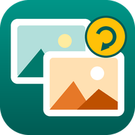

PlainConvert privacy policy
This policy covers the PlainConvert Android app (“PlainConvert”), which converts images between formats (for example HEIC to JPG, or PNG to PDF). In short: PlainConvert does not collect, sell or share any data. It has no account, no ads, no analytics and no tracking. The app does not even have permission to use the internet, so your images are never uploaded anywhere.
Information the app handles
- Images you pick with Android's photo picker or file picker, or share to PlainConvert from another app.
- Your conversion settings (output format, quality, size, file name pattern) and, if you choose one, the folder to save into.
- The converted copies PlainConvert saves for you (in Pictures/PlainConvert, Documents/PlainConvert or the folder you chose).
All processing (decoding, resizing and encoding) happens on your phone. Nothing is ever sent to the developer or anyone else.
Photo metadata
When you convert to JPG, PNG or WebP, the copies can keep basic details of the original (such as the date and camera model). By default, the location where a photo was taken is removed from the copy. You can turn both options on or off before converting.
Permissions
PlainConvert asks for no storage, camera, location or contacts permission. You choose each file in Android's own picker, which gives the app access to that file only. New files are added through Android's media store, which needs no permission on Android 10 and later. If you pick a save folder, Android gives the app access to that folder only.
Sharing
Files leave your phone only when you choose to share them, and only to the app you pick.
Storage and deletion
Your original images are never changed. Temporary working files are kept in the app's private cache and removed automatically. Uninstalling the app removes all its data (converted copies stay on your phone until you delete them). Since we never receive your data, there is nothing for us to delete on our side.
What we don't do
- We don't collect personal or sensitive information.
- We don't sell or transfer user data to third parties.
- We don't show ads or use advertising IDs.
- We don't use analytics or crash-reporting services.
Children
The app is not directed at children under 13 and does not knowingly collect information from anyone.
Changes
If this policy changes, the updated version will be posted on this page with a new date.
Contact
Questions or requests: open an issue on GitHub.